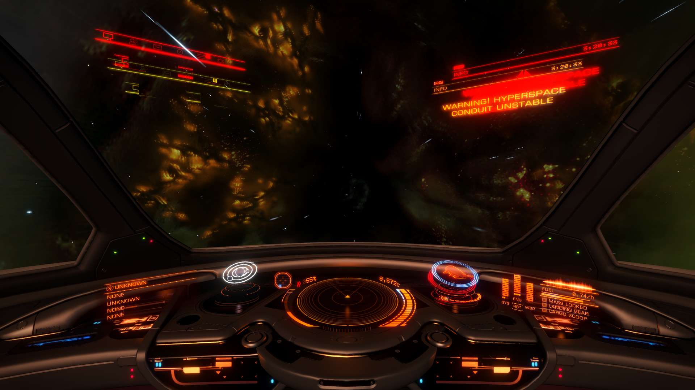
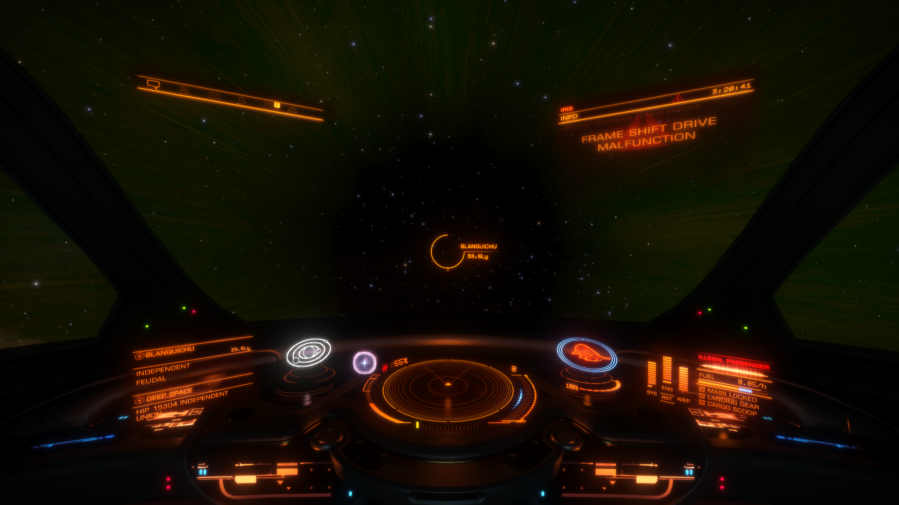
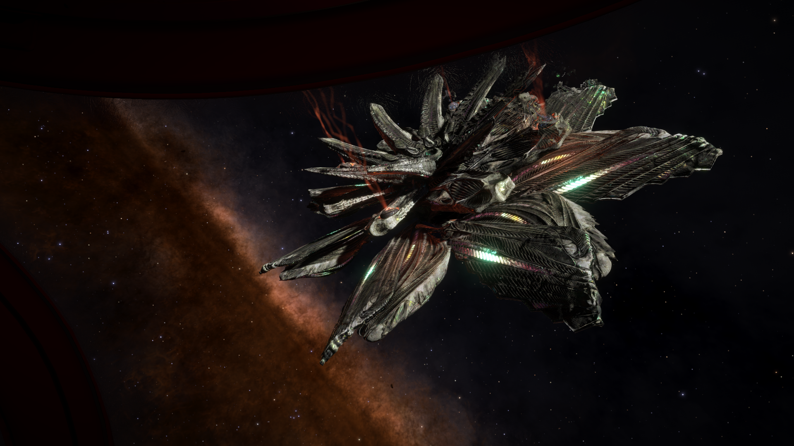
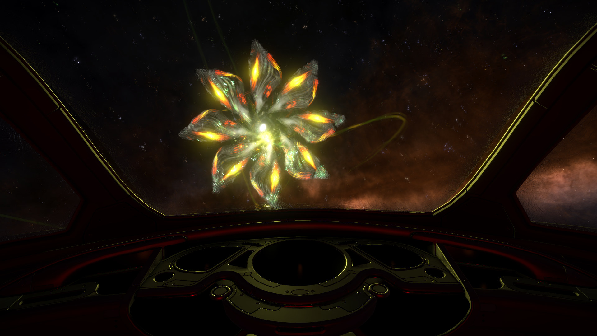
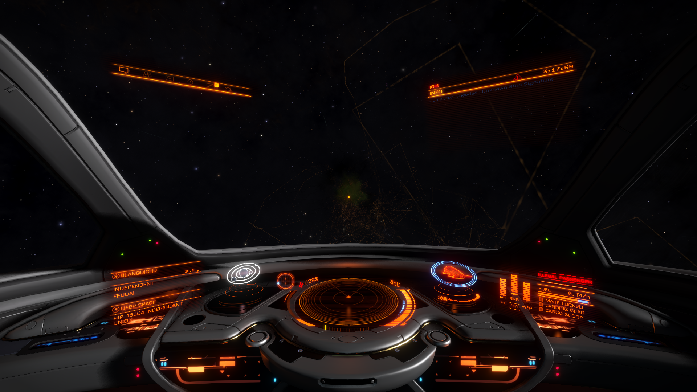

Reddit user Artemis397 brings a report that he experienced a Hyperdiction as close to Sol as HIP 15304, approximately 150 light years distant. This does not at this time appear to be related to the respawn issue some have experienced.
A gallery of screenshots from the incident is provided below (recovered from the original imgur album via the Internet Archive, as imgur is blocked in some regions):





Source: Reddit Originator: Artemis387